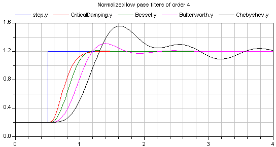

This package contains basic continuous input/output blocks described by differential equations.
All blocks of this package can be initialized in different ways controlled by parameter initType. The possible values of initType are defined in Modelica.Blocks.Types.Init:
| Name | Description |
| Init.NoInit | no initialization (start values are used as guess values with fixed=false) |
| Init.SteadyState | steady state initialization (derivatives of states are zero) |
| Init.InitialState | Initialization with initial states |
| Init.InitialOutput | Initialization with initial outputs (and steady state of the states if possible) |
For backward compatibility reasons the default of all blocks is Init.NoInit, with the exception of Integrator and LimIntegrator where the default is Init.InitialState (this was the initialization defined in version 2.2 of the Modelica standard library).
In many cases, the most useful initial condition is Init.SteadyState because initial transients are then no longer present. The drawback is that in combination with a non-linear plant, non-linear algebraic equations occur that might be difficult to solve if appropriate guess values for the iteration variables are not provided (i.e., start values with fixed=false). However, it is often already useful to just initialize the linear blocks from the Continuous blocks library in SteadyState. This is uncritical, because only linear algebraic equations occur. If Init.NoInit is set, then the start values for the states are interpreted as guess values and are propagated to the states with fixed=false.
Note, initialization with Init.SteadyState is usually difficult for a block that contains an integrator (Integrator, LimIntegrator, PI, PID, LimPID). This is due to the basic equation of an integrator:
initial equation
der(y) = 0; // Init.SteadyState
equation
der(y) = k*u;
The steady state equation leads to the condition that the input to the integrator is zero. If the input u is already (directly or indirectly) defined by another initial condition, then the initialization problem is singular (has none or infinitely many solutions). This situation occurs often for mechanical systems, where, e.g., u = desiredSpeed - measuredSpeed and since speed is both a state and a derivative, it is always defined by Init.InitialState or Init.SteadyState initialization.
In such a case, Init.NoInit has to be selected for the integrator and an additional initial equation has to be added to the system to which the integrator is connected. E.g., useful initial conditions for a 1-dim. rotational inertia controlled by a PI controller are that angle, speed, and acceleration of the inertia are zero.
Extends from Modelica.Icons.Package (Icon for standard packages).
| Name | Description |
|---|---|
CriticalDamping | Output the input signal filtered with an n-th order filter with critical damping |
Der | Derivative of input (= analytic differentiations) |
Derivative | Approximated derivative block |
Filter | Continuous low pass, high pass, band pass or band stop IIR-filter of type CriticalDamping, Bessel, Butterworth or ChebyshevI |
FirstOrder | First order transfer function block (= 1 pole) |
Integrator | Output the integral of the input signal with optional reset |
Internal … | Internal utility functions and blocks that should not be directly utilized by the user |
LimIntegrator | Integrator with limited value of the output and optional reset |
LimPID | P, PI, PD, and PID controller with limited output, anti-windup compensation, setpoint weighting and optional feed-forward |
LowpassButterworth | Output the input signal filtered with a low pass Butterworth filter of any order |
PI | Proportional-Integral controller |
PID | PID-controller in additive description form |
SecondOrder | Second order transfer function block (= 2 poles) |
StateSpace | Linear state space system |
TransferFunction | Linear transfer function |
This blocks computes output y as integral of the input u multiplied with the gain k:
k
y = - u
s
It might be difficult to initialize the integrator in steady state. This is discussed in the description of package Continuous.
If the reset port is enabled, then the output y is reset to set or to y_start (if the set port is not enabled), whenever the reset port has a rising edge.
Extends from Modelica.Blocks.Interfaces.SISO (Single Input Single Output continuous control block).
| Type | Name | Default | Description |
|---|---|---|---|
Real | k | 1 | Integrator gain |
Boolean | use_reset | false | =true, if reset port enabled |
Boolean | use_set | false | =true, if set port enabled and used as reinitialization value when reset |
Init | initType | Modelica.Blocks.Types.Init.InitialState | Type of initialization (1: no init, 2: steady state, 3,4: initial output) |
Real | y_start | 0 | Initial or guess value of output (= state) |
| Type | Name | Description |
|---|---|---|
input RealInput | u | Connector of Real input signal |
output RealOutput | y | Connector of Real output signal |
input BooleanInput | reset | Optional connector of reset signal |
input RealInput | set | Optional connector of set signal |
This blocks computes y as integral of the input u multiplied with the gain k. If the integral reaches a given upper or lower limit and the input will drive the integral outside of this bound, the integration is halted and only restarted if the input drives the integral away from the bounds.
It might be difficult to initialize the integrator in steady state. This is discussed in the description of package Continuous.
If parameter limitAtInit = false, the limits of the integrator are removed from the initialization problem which leads to a much simpler equation system. After initialization has been performed, it is checked via an assert whether the output is in the defined limits. For backward compatibility reasons limitAtInit = true. In most cases it is best to use limitAtInit = false.
If the reset port is enabled, then the output y is reset to set or to y_start (if the set port is not enabled), whenever the reset port has a rising edge.
Extends from Modelica.Blocks.Interfaces.SISO (Single Input Single Output continuous control block).
| Type | Name | Default | Description |
|---|---|---|---|
Real | k | 1 | Integrator gain |
Real | outMax | Upper limit of output | |
Real | outMin | -outMax | Lower limit of output |
Boolean | use_reset | false | =true, if reset port enabled |
Boolean | use_set | false | =true, if set port enabled and used as reinitialization value when reset |
Init | initType | Modelica.Blocks.Types.Init.InitialState | Type of initialization (1: no init, 2: steady state, 3/4: initial output) |
Boolean | limitsAtInit | true | = false, if limits are ignored during initialization (i.e., der(y)=k*u) |
Real | y_start | 0 | Initial or guess value of output (must be in the limits outMin .. outMax) |
Boolean | strict | false | = true, if strict limits with noEvent(..) |
| Type | Name | Description |
|---|---|---|
input RealInput | u | Connector of Real input signal |
output RealOutput | y | Connector of Real output signal |
input BooleanInput | reset | Optional connector of reset signal |
input RealInput | set | Optional connector of set signal |
This blocks defines the transfer function between the input u and the output y as approximated derivative:
k * s
y = ------------ * u
T * s + 1
If you would like to be able to change easily between different
transfer functions (FirstOrder, SecondOrder, ... ) by changing
parameters, use the general block TransferFunction instead
and model a derivative block with parameters
b = {k,0}, a = {T, 1}.
If k=0, the block reduces to y=0.
Extends from Modelica.Blocks.Interfaces.SISO (Single Input Single Output continuous control block).
| Type | Name | Default | Description |
|---|---|---|---|
Real | k | 1 | Gains |
Time | T | 0.01 | Time constants (T>0 required; T=0 is ideal derivative block) |
Init | initType | Modelica.Blocks.Types.Init.NoInit | Type of initialization (1: no init, 2: steady state, 3: initial state, 4: initial output) |
Real | x_start | 0 | Initial or guess value of state |
Real | y_start | 0 | Initial value of output (= state) |
| Type | Name | Description |
|---|---|---|
input RealInput | u | Connector of Real input signal |
output RealOutput | y | Connector of Real output signal |
This blocks defines the transfer function between the input u and the output y as first order system:
k
y = ------------ * u
T * s + 1
If you would like to be able to change easily between different
transfer functions (FirstOrder, SecondOrder, ... ) by changing
parameters, use the general block TransferFunction instead
and model a first order SISO system with parameters
b = {k}, a = {T, 1}.
Example:
parameter: k = 0.3, T = 0.4
results in:
0.3
y = ----------- * u
0.4 s + 1.0
Extends from Modelica.Blocks.Interfaces.SISO (Single Input Single Output continuous control block).
| Type | Name | Default | Description |
|---|---|---|---|
Real | k | 1 | Gain |
Time | T | Time Constant | |
Init | initType | Modelica.Blocks.Types.Init.NoInit | Type of initialization (1: no init, 2: steady state, 3/4: initial output) |
Real | y_start | 0 | Initial or guess value of output (= state) |
| Type | Name | Description |
|---|---|---|
input RealInput | u | Connector of Real input signal |
output RealOutput | y | Connector of Real output signal |
This blocks defines the transfer function between the input u and the output y as second order system:
k
y = ---------------------------------------- * u
( s / w )^2 + 2*D*( s / w ) + 1
If you would like to be able to change easily between different
transfer functions (FirstOrder, SecondOrder, ... ) by changing
parameters, use the general model class TransferFunction
instead and model a second order SISO system with parameters
b = {k}, a = {1/w^2, 2*D/w, 1}.
Example:
parameter: k = 0.3, w = 0.5, D = 0.4
results in:
0.3
y = ------------------- * u
4.0 s^2 + 1.6 s + 1
Extends from Modelica.Blocks.Interfaces.SISO (Single Input Single Output continuous control block).
| Type | Name | Default | Description |
|---|---|---|---|
Real | k | 1 | Gain |
Real | w | Angular frequency | |
Real | D | Damping | |
Init | initType | Modelica.Blocks.Types.Init.NoInit | Type of initialization (1: no init, 2: steady state, 3/4: initial output) |
Real | y_start | 0 | Initial or guess value of output (= state) |
Real | yd_start | 0 | Initial or guess value of derivative of output (= state) |
| Type | Name | Description |
|---|---|---|
input RealInput | u | Connector of Real input signal |
output RealOutput | y | Connector of Real output signal |
This blocks defines the transfer function between the input u and the output y as PI system:
1
y = k * (1 + ---) * u
T*s
T*s + 1
= k * ------- * u
T*s
If you would like to be able to change easily between different
transfer functions (FirstOrder, SecondOrder, ... ) by changing
parameters, use the general model class TransferFunction
instead and model a PI SISO system with parameters
b = {k*T, k}, a = {T, 0}.
Example:
parameter: k = 0.3, T = 0.4
results in:
0.4 s + 1
y = 0.3 ----------- * u
0.4 s
It might be difficult to initialize the PI component in steady state due to the integrator part. This is discussed in the description of package Continuous.
Extends from Modelica.Blocks.Interfaces.SISO (Single Input Single Output continuous control block).
| Type | Name | Default | Description |
|---|---|---|---|
Real | k | 1 | Gain |
Time | T | Time Constant (T>0 required) | |
Init | initType | Modelica.Blocks.Types.Init.NoInit | Type of initialization (1: no init, 2: steady state, 3: initial state, 4: initial output) |
Real | x_start | 0 | Initial or guess value of state |
Real | y_start | 0 | Initial value of output |
| Type | Name | Description |
|---|---|---|
input RealInput | u | Connector of Real input signal |
output RealOutput | y | Connector of Real output signal |
This is the text-book version of a PID-controller. For a more practically useful PID-controller, use block LimPID.
The PID block can be initialized in different ways controlled by parameter initType. The possible values of initType are defined in Modelica.Blocks.Types.InitPID. This type is identical to Types.Init, with the only exception that the additional option DoNotUse_InitialIntegratorState is added for backward compatibility reasons (= integrator is initialized with InitialState whereas differential part is initialized with NoInit which was the initialization in version 2.2 of the Modelica standard library).
Based on the setting of initType, the integrator (I) and derivative (D) blocks inside the PID controller are initialized according to the following table:
| initType | I.initType | D.initType |
| NoInit | NoInit | NoInit |
| SteadyState | SteadyState | SteadyState |
| InitialState | InitialState | InitialState |
| InitialOutput and initial equation: y = y_start |
NoInit | SteadyState |
| DoNotUse_InitialIntegratorState | InitialState | NoInit |
In many cases, the most useful initial condition is SteadyState because initial transients are then no longer present. If initType = InitPID.SteadyState, then in some cases difficulties might occur. The reason is the equation of the integrator:
der(y) = k*u;
The steady state equation "der(x)=0" leads to the condition that the input u to the integrator is zero. If the input u is already (directly or indirectly) defined by another initial condition, then the initialization problem is singular (has none or infinitely many solutions). This situation occurs often for mechanical systems, where, e.g., u = desiredSpeed - measuredSpeed and since speed is both a state and a derivative, it is natural to initialize it with zero. As sketched this is, however, not possible. The solution is to not initialize u or the variable that is used to compute u by an algebraic equation.
Extends from Modelica.Blocks.Interfaces.SISO (Single Input Single Output continuous control block).
| Type | Name | Default | Description |
|---|---|---|---|
Real | k | 1 | Gain |
Time | Ti | Time Constant of Integrator | |
Time | Td | Time Constant of Derivative block | |
Real | Nd | 10 | The higher Nd, the more ideal the derivative block |
InitPID | initType | Modelica.Blocks.Types.InitPID.DoNotUse_InitialIntegratorState | Type of initialization (1: no init, 2: steady state, 3: initial state, 4: initial output) |
Real | xi_start | 0 | Initial or guess value for integrator output (= integrator state) |
Real | xd_start | 0 | Initial or guess value for state of derivative block |
Real | y_start | 0 | Initial value of output |
| Type | Name | Description |
|---|---|---|
input RealInput | u | Connector of Real input signal |
output RealOutput | y | Connector of Real output signal |
Via parameter controllerType either P, PI, PD, or PID can be selected. If, e.g., PI is selected, all components belonging to the D-part are removed from the block (via conditional declarations). The example model Modelica.Blocks.Examples.PID_Controller demonstrates the usage of this controller. Several practical aspects of PID controller design are incorporated according to chapter 3 of the book:
Besides the additive proportional, integral and derivative part of this controller, the following features are present:
The parameters of the controller can be manually adjusted by performing simulations of the closed loop system (= controller + plant connected together) and using the following strategy:
Initialization
This block can be initialized in different ways controlled by parameter initType. The possible values of initType are defined in Modelica.Blocks.Types.InitPID. This type is identical to Types.Init, with the only exception that the additional option DoNotUse_InitialIntegratorState is added for backward compatibility reasons (= integrator is initialized with InitialState whereas differential part is initialized with NoInit which was the initialization in version 2.2 of the Modelica standard library).
Based on the setting of initType, the integrator (I) and derivative (D) blocks inside the PID controller are initialized according to the following table:
| initType | I.initType | D.initType |
| NoInit | NoInit | NoInit |
| SteadyState | SteadyState | SteadyState |
| InitialState | InitialState | InitialState |
| InitialOutput and initial equation: y = y_start |
NoInit | SteadyState |
| DoNotUse_InitialIntegratorState | InitialState | NoInit |
In many cases, the most useful initial condition is SteadyState because initial transients are then no longer present. If initType = InitPID.SteadyState, then in some cases difficulties might occur. The reason is the equation of the integrator:
der(y) = k*u;
The steady state equation "der(x)=0" leads to the condition that the input u to the integrator is zero. If the input u is already (directly or indirectly) defined by another initial condition, then the initialization problem is singular (has none or infinitely many solutions). This situation occurs often for mechanical systems, where, e.g., u = desiredSpeed - measuredSpeed and since speed is both a state and a derivative, it is natural to initialize it with zero. As sketched this is, however, not possible. The solution is to not initialize u_m or the variable that is used to compute u_m by an algebraic equation.
When initializing in steady-state, homotopy-based initialization can help the convergence of the solver, by using a simplified model a the beginning of the solution process. Different options are available.
The parameter limitAtInit is obsolete since MSL 3.2.2 and only kept for backwards compatibility.
Extends from Modelica.Blocks.Interfaces.SVcontrol (Single-Variable continuous controller).
| Type | Name | Default | Description |
|---|---|---|---|
SimpleController | controllerType | Modelica.Blocks.Types.SimpleController.PID | Type of controller |
Real | k | 1 | Gain of controller |
Time | Ti | 0.5 | Time constant of Integrator block |
Time | Td | 0.1 | Time constant of Derivative block |
Real | yMax | Upper limit of output | |
Real | yMin | -yMax | Lower limit of output |
Real | wp | 1 | Set-point weight for Proportional block (0..1) |
Real | wd | 0 | Set-point weight for Derivative block (0..1) |
Real | Ni | 0.9 | Ni*Ti is time constant of anti-windup compensation |
Real | Nd | 10 | The higher Nd, the more ideal the derivative block |
Boolean | withFeedForward | false | Use feed-forward input? |
Real | kFF | 1 | Gain of feed-forward input |
InitPID | initType | Modelica.Blocks.Types.InitPID.DoNotUse_InitialIntegratorState | Type of initialization (1: no init, 2: steady state, 3: initial state, 4: initial output) |
Real | xi_start | 0 | Initial or guess value for integrator output (= integrator state) |
Real | xd_start | 0 | Initial or guess value for state of derivative block |
Real | y_start | 0 | Initial value of output |
LimiterHomotopy | homotopyType | Modelica.Blocks.Types.LimiterHomotopy.Linear | Simplified model for homotopy-based initialization |
Boolean | strict | false | = true, if strict limits with noEvent(..) |
Boolean | limitsAtInit | true | Has no longer an effect and is only kept for backwards compatibility (the implementation uses now the homotopy operator) |
| Type | Name | Description |
|---|---|---|
input RealInput | u_s | Connector of setpoint input signal |
input RealInput | u_m | Connector of measurement input signal |
output RealOutput | y | Connector of actuator output signal |
input RealInput | u_ff | Optional connector of feed-forward input signal |
This block defines the transfer function between the input u and the output y as (nb = dimension of b, na = dimension of a):
b[1]*s^[nb-1] + b[2]*s^[nb-2] + ... + b[nb]
y(s) = --------------------------------------------- * u(s)
a[1]*s^[na-1] + a[2]*s^[na-2] + ... + a[na]
State variables x are defined according to controller canonical form. Internally, vector x is scaled to improve the numerics (the states in versions before version 3.0 of the Modelica Standard Library have been not scaled). This scaling is not visible from the outside of this block because the non-scaled vector x is provided as output signal and the start value is with respect to the non-scaled vector x. Initial values of the states x can be set via parameter x_start.
Example:
TransferFunction g(b = {2,4}, a = {1,3});
results in the following transfer function:
2*s + 4
y = --------- * u
s + 3
Extends from Modelica.Blocks.Interfaces.SISO (Single Input Single Output continuous control block).
| Type | Name | Default | Description |
|---|---|---|---|
Real | b[:] | {1} | Numerator coefficients of transfer function (e.g., 2*s+3 is specified as {2,3}) |
Real | a[:] | {1} | Denominator coefficients of transfer function (e.g., 5*s+6 is specified as {5,6}) |
Init | initType | Modelica.Blocks.Types.Init.NoInit | Type of initialization (1: no init, 2: steady state, 3: initial state, 4: initial output) |
Real | x_start[size(a, 1) - 1] | zeros(nx) | Initial or guess values of states |
Real | y_start | 0 | Initial value of output (derivatives of y are zero up to nx-1-th derivative) |
| Type | Name | Description |
|---|---|---|
input RealInput | u | Connector of Real input signal |
output RealOutput | y | Connector of Real output signal |
The State Space block defines the relation between the input u and the output y in state space form:
der(x) = A * x + B * u
y = C * x + D * u
The input is a vector of length nu, the output is a vector of length ny and nx is the number of states. Accordingly
A has the dimension: A(nx,nx),
B has the dimension: B(nx,nu),
C has the dimension: C(ny,nx),
D has the dimension: D(ny,nu)
Example:
parameter: A = [0.12, 2;3, 1.5]
parameter: B = [2, 7;3, 1]
parameter: C = [0.1, 2]
parameter: D = zeros(ny,nu)
results in the following equations:
[der(x[1])] [0.12 2.00] [x[1]] [2.0 7.0] [u[1]]
[ ] = [ ]*[ ] + [ ]*[ ]
[der(x[2])] [3.00 1.50] [x[2]] [0.1 2.0] [u[2]]
[x[1]] [u[1]]
y[1] = [0.1 2.0] * [ ] + [0 0] * [ ]
[x[2]] [u[2]]
Extends from Modelica.Blocks.Interfaces.MIMO (Multiple Input Multiple Output continuous control block).
| Type | Name | Default | Description |
|---|---|---|---|
Real | A[:,size(A, 1)] | [1,0; 0,1] | Matrix A of state space model (e.g., A=[1, 0; 0, 1]) |
Real | B[size(A, 1),:] | [1; 1] | Matrix B of state space model (e.g., B=[1; 1]) |
Real | C[:,size(A, 1)] | [1,1] | Matrix C of state space model (e.g., C=[1, 1]) |
Real | D[size(C, 1),size(B, 2)] | zeros(size(C, 1), size(B, 2)) | Matrix D of state space model |
Init | initType | Modelica.Blocks.Types.Init.NoInit | Type of initialization (1: no init, 2: steady state, 3: initial state, 4: initial output) |
Real | x_start[nx] | zeros(nx) | Initial or guess values of states |
Real | y_start[ny] | zeros(ny) | Initial values of outputs (remaining states are in steady state if possible) |
final Integer | nin | size(B, 2) | Number of inputs |
final Integer | nout | size(C, 1) | Number of outputs |
| Type | Name | Description |
|---|---|---|
input RealInput | u[nin] | Connector of Real input signals |
output RealOutput | y[nout] | Connector of Real output signals |
Defines that the output y is the derivative of the input u. Note, that Modelica.Blocks.Continuous.Derivative computes the derivative in an approximate sense, where as this block computes the derivative exactly. This requires that the input u is differentiated by the Modelica translator, if this derivative is not yet present in the model.
Extends from Modelica.Blocks.Interfaces.SISO (Single Input Single Output continuous control block).
| Type | Name | Description |
|---|---|---|
input RealInput | u | Connector of Real input signal |
output RealOutput | y | Connector of Real output signal |
This block defines the transfer function between the input u and the output y as an n-th order low pass filter with Butterworth characteristics and cut-off frequency f. It is implemented as a series of second order filters and a first order filter. Butterworth filters have the feature that the amplitude at the cut-off frequency f is 1/sqrt(2) (= 3 dB), i.e., they are always "normalized". Step responses of the Butterworth filter of different orders are shown in the next figure:
If transients at the simulation start shall be avoided, the filter should be initialized in steady state (e.g., using option initType=Modelica.Blocks.Types.Init.SteadyState).
Extends from Modelica.Blocks.Interfaces.SISO (Single Input Single Output continuous control block).
| Type | Name | Default | Description |
|---|---|---|---|
Integer | n | 2 | Order of filter |
Frequency | f | Cut-off frequency | |
Init | initType | Modelica.Blocks.Types.Init.NoInit | Type of initialization (1: no init, 2: steady state, 3: initial state, 4: initial output) |
Real | x1_start[m] | zeros(m) | Initial or guess values of states 1 (der(x1)=x2) |
Real | x2_start[m] | zeros(m) | Initial or guess values of states 2 |
Real | xr_start | 0 | Initial or guess value of real pole for uneven order otherwise dummy |
Real | y_start | 0 | Initial value of output (states are initialized in steady state if possible) |
| Type | Name | Description |
|---|---|---|
input RealInput | u | Connector of Real input signal |
output RealOutput | y | Connector of Real output signal |
This block defines the transfer function between the input u and the output y as an n-th order filter with critical damping characteristics and cut-off frequency f. It is implemented as a series of first order filters. This filter type is especially useful to filter the input of an inverse model, since the filter does not introduce any transients.
If parameter normalized = true (default), the filter is normalized such that the amplitude of the filter transfer function at the cut-off frequency f is 1/sqrt(2) (= 3 dB). Otherwise, the filter is not normalized, i.e., it is unmodified. A normalized filter is usually much better for applications, since filters of different orders are "comparable", whereas non-normalized filters usually require to adapt the cut-off frequency, when the order of the filter is changed. Figures of the filter step responses are shown below. Note, in versions before version 3.0 of the Modelica Standard library, the CriticalDamping filter was provided only in non-normalized form.
If transients at the simulation start shall be avoided, the filter should be initialized in steady state (e.g., using option initType=Modelica.Blocks.Types.Init.SteadyState).
The critical damping filter is defined as
α = if normalized then sqrt(2^(1/n) - 1) else 1 // frequency correction factor
ω = 2*π*f/α
1
y = ------------- * u
(s/w + 1)^n


Extends from Modelica.Blocks.Interfaces.SISO (Single Input Single Output continuous control block).
| Type | Name | Default | Description |
|---|---|---|---|
Integer | n | 2 | Order of filter |
Frequency | f | Cut-off frequency | |
Boolean | normalized | true | = true, if amplitude at f_cut is 3 dB, otherwise unmodified filter |
Init | initType | Modelica.Blocks.Types.Init.NoInit | Type of initialization (1: no init, 2: steady state, 3: initial state, 4: initial output) |
Real | x_start[n] | zeros(n) | Initial or guess values of states |
Real | y_start | 0 | Initial value of output (remaining states are in steady state) |
| Type | Name | Description |
|---|---|---|
input RealInput | u | Connector of Real input signal |
output RealOutput | y | Connector of Real output signal |
This blocks models various types of filters:
low pass, high pass, band pass, and band stop filters
using various filter characteristics:
CriticalDamping, Bessel, Butterworth, Chebyshev Type I filters
By default, a filter block is initialized in steady-state, in order to avoid unwanted oscillations at the beginning. In special cases, it might be useful to select one of the other initialization options under tab "Advanced".
Typical frequency responses for the 4 supported low pass filter types are shown in the next figure:
The step responses of the same low pass filters are shown in the next figure, starting from a steady state initial filter with initial input = 0.2:

Obviously, the frequency responses give a somewhat wrong impression of the filter characteristics: Although Butterworth and Chebyshev filters have a significantly steeper magnitude as the CriticalDamping and Bessel filters, the step responses of the latter ones are much better. This means for example, that a CriticalDamping or a Bessel filter should be selected, if a filter is mainly used to make a non-linear inverse model realizable.
Typical frequency responses for the 4 supported high pass filter types are shown in the next figure:
The corresponding step responses of these high pass filters are shown in the next figure:
All filters are available in normalized (default) and non-normalized form. In the normalized form, the amplitude of the filter transfer function at the cut-off frequency f_cut is -3 dB (= 10^(-3/20) = 0.70794..). Note, when comparing the filters of this function with other software systems, the setting of "normalized" has to be selected appropriately. For example, the signal processing toolbox of MATLAB provides the filters in non-normalized form and therefore a comparison makes only sense, if normalized = false is set. A normalized filter is usually better suited for applications, since filters of different orders are "comparable", whereas non-normalized filters usually require to adapt the cut-off frequency, when the order of the filter is changed. See a comparison of "normalized" and "non-normalized" filters at hand of CriticalDamping filters of order 1,2,3:
The filters are implemented in the following, reliable way:
// second order block with eigen values: a +/- jb
der(x1) = a*x1 - b*x2 + (a^2 + b^2)/b*u;
der(x2) = b*x1 + a*x2;
y = x2;
The dc-gain from the input to the output of this block is one and the selected
states are in the order of the input (if "u" is in the order of "one", then the
states are also in the order of "one"). In the "Advanced" tab, a "nominal" value for
the input "u" can be given. If appropriately selected, the states are in the order of "one" and
then step-size control is always appropriate.Extends from Modelica.Blocks.Interfaces.SISO (Single Input Single Output continuous control block).
| Type | Name | Default | Description |
|---|---|---|---|
AnalogFilter | analogFilter | Modelica.Blocks.Types.AnalogFilter.CriticalDamping | Analog filter characteristics (CriticalDamping/Bessel/Butterworth/ChebyshevI) |
FilterType | filterType | Modelica.Blocks.Types.FilterType.LowPass | Type of filter (LowPass/HighPass/BandPass/BandStop) |
Integer | order | 2 | Order of filter |
Frequency | f_cut | Cut-off frequency | |
Real | gain | 1 | Gain (= amplitude of frequency response at zero frequency) |
Real | A_ripple | 0.5 | Pass band ripple for Chebyshev filter (otherwise not used); > 0 required |
Frequency | f_min | 0 | Band of band pass/stop filter is f_min (A=-3db*gain) .. f_cut (A=-3db*gain) |
Boolean | normalized | true | = true, if amplitude at f_cut = -3db, otherwise unmodified filter |
Init | init | Modelica.Blocks.Types.Init.SteadyState | Type of initialization (no init/steady state/initial state/initial output) |
final Integer | nx | if filterType == Modelica.Blocks.Types.FilterType.LowPass or filterType == Modelica.Blocks.Types.FilterType.HighPass then order else 2 * order | |
Real | x_start[nx] | zeros(nx) | Initial or guess values of states |
Real | y_start | 0 | Initial value of output |
Real | u_nominal | 1 | Nominal value of input (used for scaling the states) |
| Type | Name | Description |
|---|---|---|
input RealInput | u | Connector of Real input signal |
output RealOutput | y | Connector of Real output signal |
output RealOutput | x[nx] | Filter states |
Generated 2018-10-22 14:44:41 EDT by MapleSim.